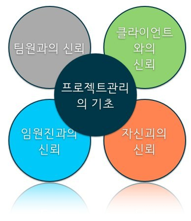

프로젝트 관리의 기초는 신뢰다.
얼마전 어려움을 겪었던 프로젝트에서 다시 한번 신뢰가 프로젝트에서 얼마나 중요한지를 깨닳게 되었다.
프로젝트에서 중요한 요소들이 많이 있겠지만 그중에서도 신뢰란 기초가 없을때는 그나머지는 허물어지게 마련인듯 하다.
그러면 믿음이 발생하는 요소들과 대처방안은 어떤것이 있는지 알아보겠다.
프로젝트 진행 시 필요한 신뢰의 요소

첫번째.
팀원들과의 신뢰
팀원들과의 신뢰은 프로젝트의 품질을 높이는 방법 중에 하나이다.
아무리 작은일을 진행하는 작업자라 하여도 신뢰가 쌓이지 않으면 그 작업은 수포로 돌아간다.
신뢰를 얻기 위해서는 본인의 위치를 잃지 안도록 하되 낮은 자세로 임해야 함을 잊지 말아야 한다.
목에 깁스를 한 자세로 아래를 보지 못한다면 팀원들은 그 관리자를 믿지 못할것이다.
신뢰는 작은곳에서 온다 본인의 마음가짐에서 신뢰는 쌓이게 된다.
두번째.
클라이언트와의 신뢰
프로젝트 진행시에 넘어야할 관문이다.
변화무쌍한 클라이언트들을 보면 신뢰를 갖기 힘들다. 이럴땐 성실함을 무기로 쌓아야 한다.
기술적인 대응은 각 중간단계의 관리자와 협의하여 진행하면 되지만 직접 대화하고 제안하는 입장에서 클라이언트의 마음을 읽고 그에 대한 답을 제출해야 신뢰는 쌓이게 된다.
기본적인 신뢰는 제안의 완성도에서 올테지만 프로젝트 기간 중에 서로의 믿음은 관리자의 성실함에서도 점수를 많이 딸수 있다.
성실하게 임하는 자세야 말로 클라이언트가 원하는 관리자의 자세이다.
세번째.
임원진과의 신뢰
프로젝트이 리소스에 대한 측정을 하는 단계에서는 임원진의 개입될수밖에 없다.
팀간의 리소스를 분산하는 팀장의 입장에서는 프로젝트를 관리하는 관리자에게 어느정도의 신뢰를 믿고 리소스를 분배하게 되는데 이럴때 신뢰가 없을때는 리소스 배분에서도 힘들 뿐 더러 추가적인 지원에 대한 불안한 요소를 만들게 된다.
반대의 경우가 될수도 있겠지만 문제는 신뢰의 바탕이라면 조금더 부드러운 리소스 지원이 가능하기 때문이다.
또한 임원진에게 얻는 신뢰는 단기간에 얻을 수 있는것이 아니여서 계속적인 유지도 필요하다.
네번째.
자신과의 신뢰
여러가지의 특성의 프로젝트를 진행하게 되면 자신에게 맞는 프로젝트가 나오기 마련이다.
이런 프로젝트는 자신감이 있어 진행하는데 무리가 없지만 처음하는 프로젝트나 자신이 힘들어했던 프로젝트는 자신과의 신뢰가 없어 초기부터 프로젝트를 힘들게 이끌어 갈 수밖에 없는 상황이 온다.
자신에 대한 믿음이야 말로 가장 중요한 프로젝트의 기초다.
자신의 믿음을 얻기 위해서는 계속적인 지식의 습득 밖에는 없는듯 하다.
마지막으로
신뢰의 바탕에서 프로젝트의 운영은 새로운 발견을 하게 된다.
좋은 프로젝트, 즐거운 프로젝트를 운영하기 위해서는 무엇보다도 4가지의 요소를 잊지 말고 진행해야 겠다.